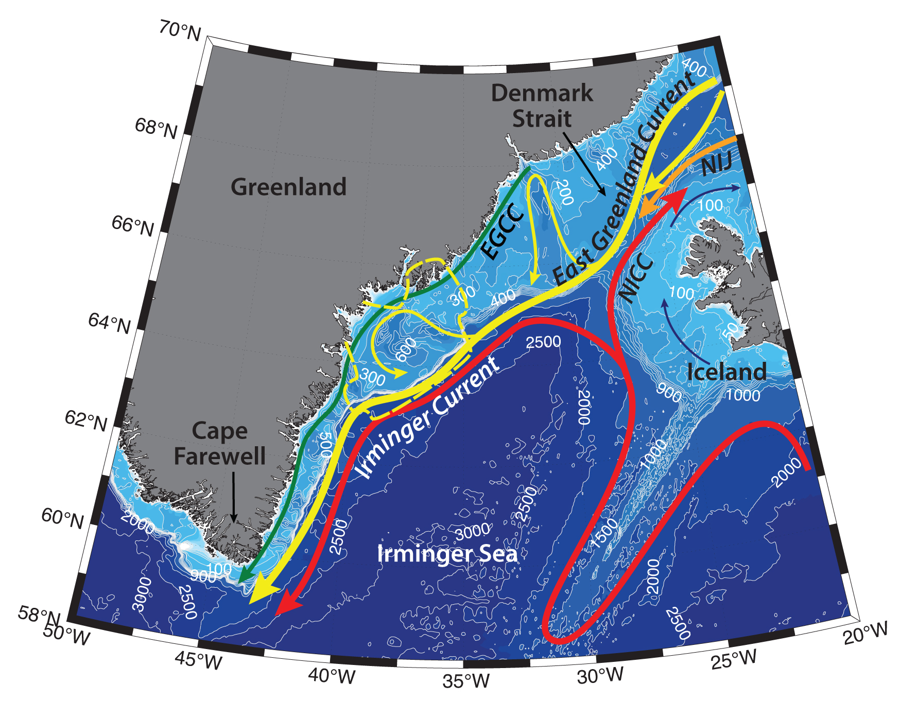

Schematic water circulation patterns and geographical place names in the Southeast Greenland region. Adopted from Sutherland and Pickart, 2008; Sutherland et al., 2009. Dashed line marks the studied region.
The Southeast Greenland shelf hydrography is largely determined by the structure and variability of East Greenland Coastal Current (EGCC), East Greenland Current and Irminger Current, which are influenced by the atmospheric forcing and steered by topography (e.g. Sutherland and Pickart, 2008). Tidal circulation and Greenland freshwater runoff.
The cold East Greenland Current (EGC) is the main conduit for waters exiting the Arctic Ocean. EGC flows from the Fram Strait southwards along the East Greenland shelf to the Cape Farewell and carries sea ice, as well as cold and fresh Polar Surface Water (-1.9<T<0°C), Atlantic Water both recirculated in the Basin (also known as Arctic Atlantic Water; T<~1°C; e.g. Rudels et al., 2002) and in the Fram Strait (e.g. Bourke et al. 1988), and cold Polar Deep Water out from the Arctic Basin (e.g. Rudels et al., 2002). On its way along the Greenland slope the EGC interacts with waters from the Greenland and Iceland Seas and incorporates additional intermediate water masses.
On its way southwards, East Greenland Current bifurcates into several branches. Upstream from Denmark Strait East Icelandic Current (EIC) flows southeastwards along the northern Iceland Shelf (e.g. Vilhjalmsson, 2002; Oskarsson et al., 2009), while another branch of the EGC splits off via baroclinic eddies due to the defined topography of the Blosseville Basin (Våge et al., 2013). The separated EGC is also flowing southwards and has essentially the same characteristics, as the initial EGC (Pickart et al., 2017).
To the south of the Denmark Strait a low-salinity, high-velocity jet has been observed bifurcating from the EGC on the inner Greenland shelf, trapped against the coast, due, presumably, to bathymetric steering. This jet is known as the East Greenland Coastal Current (EGCC; e.g. Bacon et al., 2002), and was measured along the entire southeastern Greenland shelf (~1000 km) from the Kangerdlugssuaq Trough to Cape Farewell, but had only weak signature to the north from Denmark Strait (Sutherland and Pickart, 2008). It is surface-intensified with a high velocity core (ranging from 50 to 100 cm/s), and distinguished by a low-salinity wedge close to coast (S<34; Sutherland et al., 2009). When the surface 33.5 isohaline is used as a proxy, the EGCC appears to follow the 500 m isobath (Sutherland and Pickart, 2008). The current is approximately 20 km wide.
The transport of the EGCC was evaluated to be from 0,8 Sv to 2 Sv of water (Bacon et al., 2002; Sutherland and Pickart, 2008). Bacon with coauthors suggested the EGCC to be mainly a seasonal feature, but some studies claim it to exist year-round (e.g. Sutherland et al., 2009). While the associated freshwater transport of the EGCC can comprise up to 50% of the annual mean freshwater export from the Arctic Ocean through Fram Strait, one should remember, that the jet can also be advecting coastal runoff and melted sea and land ice. In the narrow parts of the shelf EGCC can converge closer back with the EGC. Two currents co-vary, together their transport is estimated ~ 2 Sv southwards (Sutherland and Pickart, 2008). Downwelling favorable winds in the region enhance the transport of the current, and cause a deeper and narrower EGCC.
Next to the cold low-salinity EGC, Irminger Current advects warm and saline Atlantic Water (AW, T = ~4.5–6.5°C, S =~ 34.8–35.1) southward along the shelfbreak. The boundary between EGC and IC is usually taken as 34.8-34.9 isohaline (Sutherland and Pickart, 2008). Irminger Sea Water (T = ~4–5°C, S =~ 35; Clarke, 1984) – a mixture between EGC and IC Atlantic Water, influenced also by wintertime cooling – lies closer to Greenland, while the offshore part of the IC is occupied by the Northeast Atlantic Water, which is the Gulf Stream remnant water (T > 7 °C, S > 35).